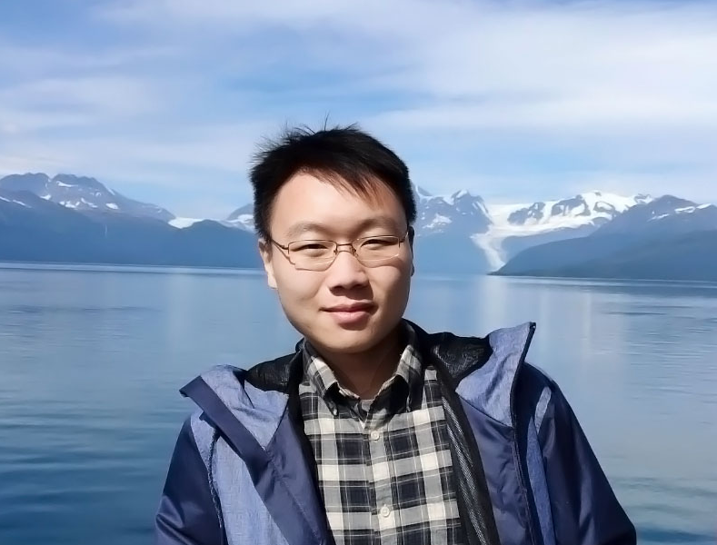

|  |
Zhen-Yu Zhang, D.Eng. Postdoctoral Researcher, Imperfect Information Learning Team, RIKEN Center for Advanced Intelligence Project.
Email: zhangzhenyu.gm [at] gmail.com |
My research interests include topics in machine learning and data mining.
Most recently, I am interested in:
Learning from Incomplete and Inaccurate Supervision. [arXiv]
Yu-Jie Zhang, Zhen-Yu Zhang, Peng Zhao, and Masashi Sugiyama.
Handling New Class in Online Label Shift.
Yu-Yang Qian, Yong Bai, Zhen-Yu Zhang, Peng Zhao, and Zhi-Hua Zhou
In: Proceedings of the 23rd IEEE International Conference on Data Mining (ICDM'23), 2023. (in press)
面向特征演变环境的标记噪声鲁棒学习算法
张震宇, 姜远.
计算机研究与发展, 2023.
Adaptive Learning for Weakly Labeled Streams. [paper] [bibtex]
Zhen-Yu Zhang, Yu-Yang Qian, Yu-Jie Zhang, Yuan Jiang, and Zhi-Hua Zhou.
In: Proceedings of the 28th ACM SIGKDD Conference on Knowledge Discovery and Data Mining (KDD'22), Washington, DC, 2022.
Learning from Incomplete and Inaccurate Supervision. [paper] [bibtex]
Zhen-Yu Zhang, Peng Zhao, Yuan Jiang, and Zhi-Hua Zhou.
IEEE Transactions on Knowledge and Data Engineering (TKDE), 2022.
Learning with Feature and Distribution Evolvable Streams. [paper] [supp] [bibtex]
Zhen-Yu Zhang, Peng Zhao, Yuan Jiang, and Zhi-Hua Zhou.
In: Proceedings of the 37th International Conference on Machine Learning (ICML'20), Vienna, Austria, 2020.
Safe Deep Semi-Supervised Learning for Unseen-Class Unlabeled Data. [paper] [supp] [bibtex]
Lan-Zhe Guo, Zhen-Yu Zhang, Yuan Jiang, Yu-Feng Li, and Zhi-Hua Zhou.
In: Proceedings of the 37th International Conference on Machine Learning (ICML'20), Vienna, Austria, 2020.
Learning from Incomplete and Inaccurate Supervision. [paper] [bibtex]
Zhen-Yu Zhang, Peng Zhao, Yuan Jiang, and Zhi-Hua Zhou.
In: Proceedings of the 25th ACM SIGKDD Conference on Knowledge Discovery and Data Mining (KDD'19), Anchorage, AL, 2019.
Regularized Content-Aware Tensor Factorization Meets Temporal-Aware Location Recommendation. [paper] [bibtex]
Defu Lian, Zhen-Yu Zhang, Yong Ge, Fuzheng Zhang, Nicholas Jing Yuan, and Xing Xie.
In: Proceedings of the 16th IEEE International Conference on Data Mining (ICDM'16), Barcelona, Spain, 2016.
Reviewer for Conferences: AAAI (2020, 2021, 2022, 2023); IJCAI (2020, 2021, 2022, 2023); KDD (2022, 2023); ICML (2021, 2022, 2023); NeurIPS (2020, 2021, 2022, 2023); ICLR (2021, 2022, 2023); UAI (2023).
Reviewer for Journals: IEEE TPAMI, ACM TKDD, MLJ, TMLR.
Jiangsu Bank Scholarship, 2021
National Scholarship for Doctoral Students, MOE of PRC, 2020
Artificial Intelligence Scholarship, 2019
Excellent Bachelor's Thesis, in UESTC, 2017